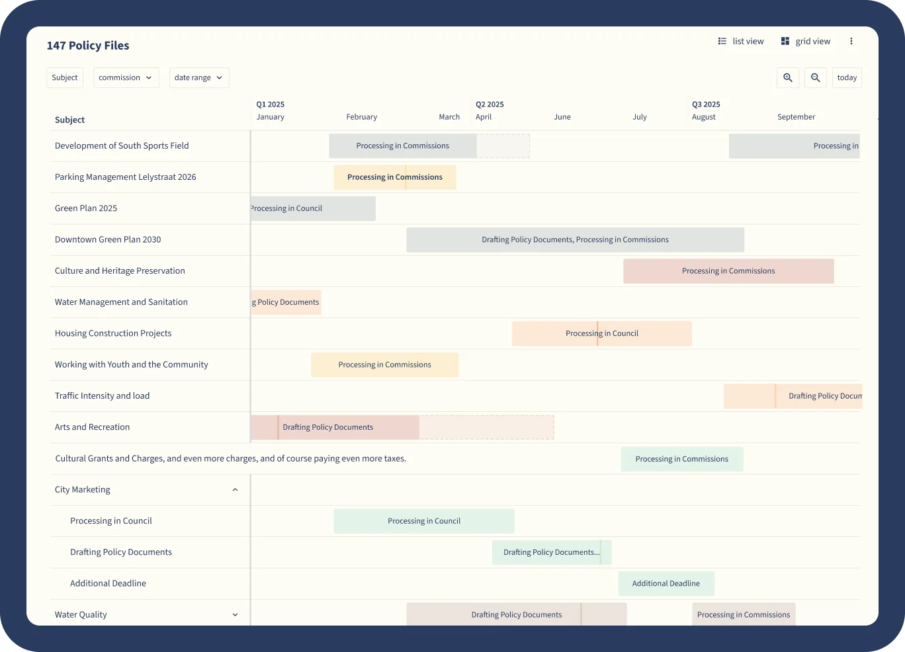

Station 1, forward plan
Plan the year, and every key decision in it.
The Long-term planner lays out council and committee meetings with their deadlines and milestones, so items land on the right agenda at the right time.
- Agenda items planned across short and long timelines
- Deadline tracking built in
- Shared with colleagues, Members and the public
28 clear days. The notice of a key decision has to be public at least this long before it's taken.
